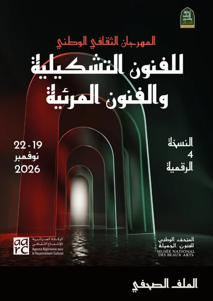
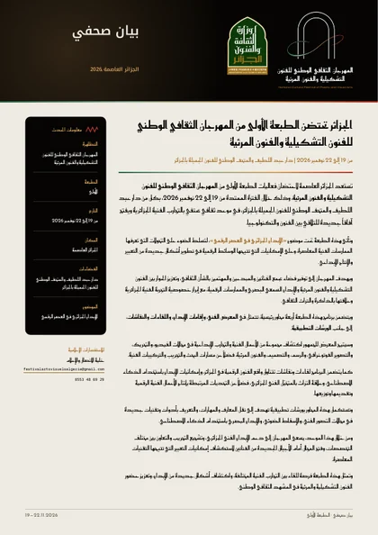
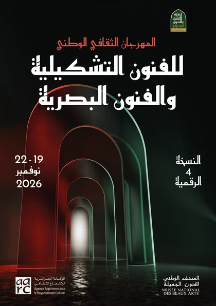

01
الملف الصحفي
وثيقة تعريفية تتناول رؤية المهرجان وأهدافه وموضوع هذه الدورة، إلى جانب برنامجه الفني ومختلف الأنشطة والمحاور التي يتضمنها.
تحميل الملف الصحفي06 / 06
يتيح المهرجان الوطني للفنون التشكيلية والفنون الرقمية للصحفيين وممثلي وسائل الإعلام مجموعة من الوثائق الرسمية الخاصة بهذه النسخة، والتعرّف على رؤيته وأهدافه وموضوعه، إلى جانب برنامجه الفني ومختلف الأنشطة المندرجة ضمنه.
ويضم هذا القسم الملف الصحفي، الذي يقدم عرضاً تعريفياً بالمهرجان ومختلف محاوره، إلى جانب البيان الصحفي الذي يتناول أبرز المعلومات المتعلقة بهذه الدورة.

وثيقة تعريفية تتناول رؤية المهرجان وأهدافه وموضوع هذه الدورة، إلى جانب برنامجه الفني ومختلف الأنشطة والمحاور التي يتضمنها.
تحميل الملف الصحفي
البيان الرسمي للمهرجان، المتضمن لأبرز المعلومات والتفاصيل المتعلقة بهذه الدورة، والموجه إلى وسائل الإعلام والجهات الصحفية.
تحميل البيان الصحفي
خلية الاتصال والإعلام. للاستفسارات الإعلامية وطلبات المقابلات والتنسيق بشأن التغطية الصحفية.